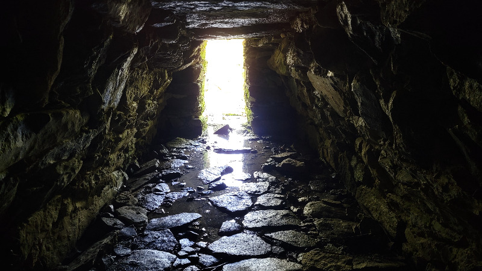
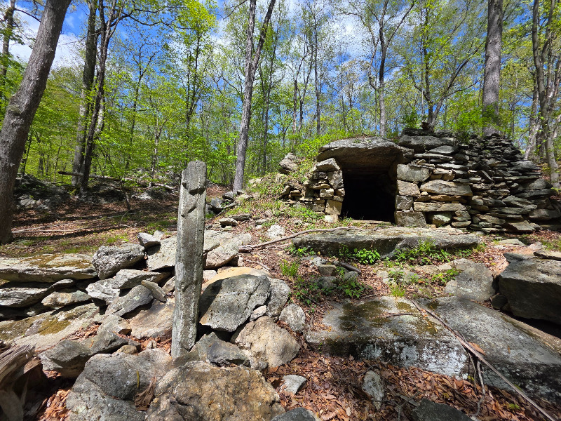
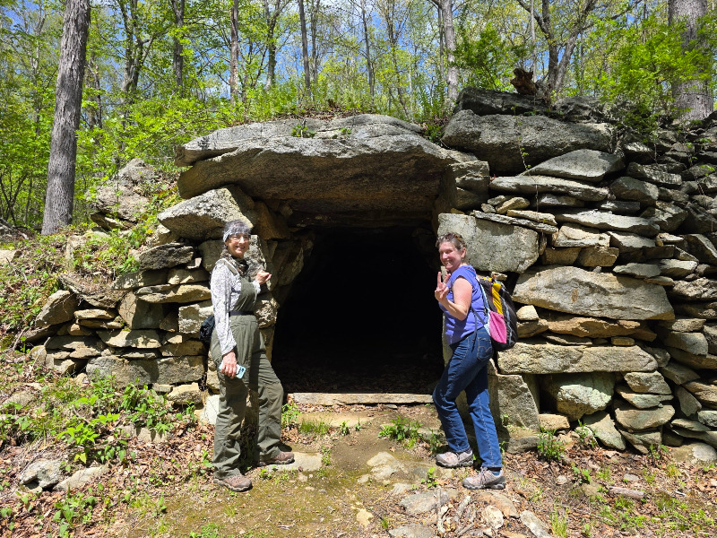
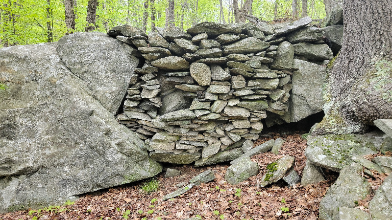
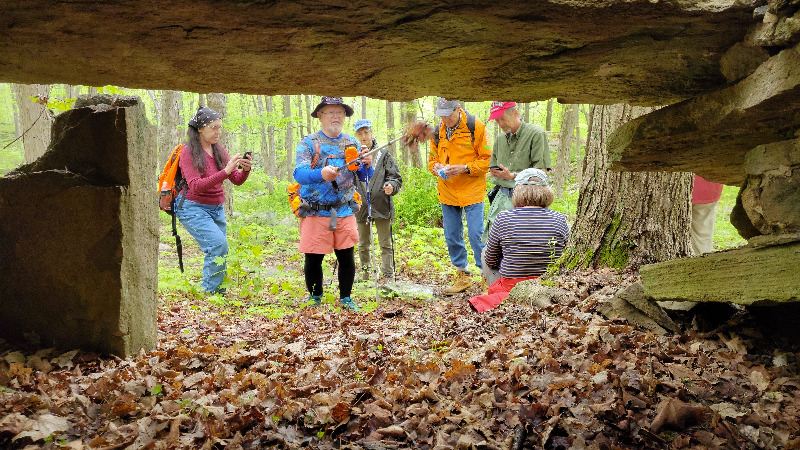

Friday evening had a showing of Ted Timreck's new film, Ancient Sea Peoples of the North Atlantic.
Dr. Fitzhugh introduced the film and led a discussion afterwards.
We had our annual membership meeting Saturday morning, followed by chapter reports.
If you have any photos you would like to share, send us an email.
Field Trip Montage

Whangtown Chamber, by Walter van Roggen

Kings Chamber and standing stone, by Devon Toland

Kings Chamber, by Devon Toland

Filled Gap, by Walter van Roggen

Dicktown Chamber, led by Rob Buchanan, by Walter van Roggen